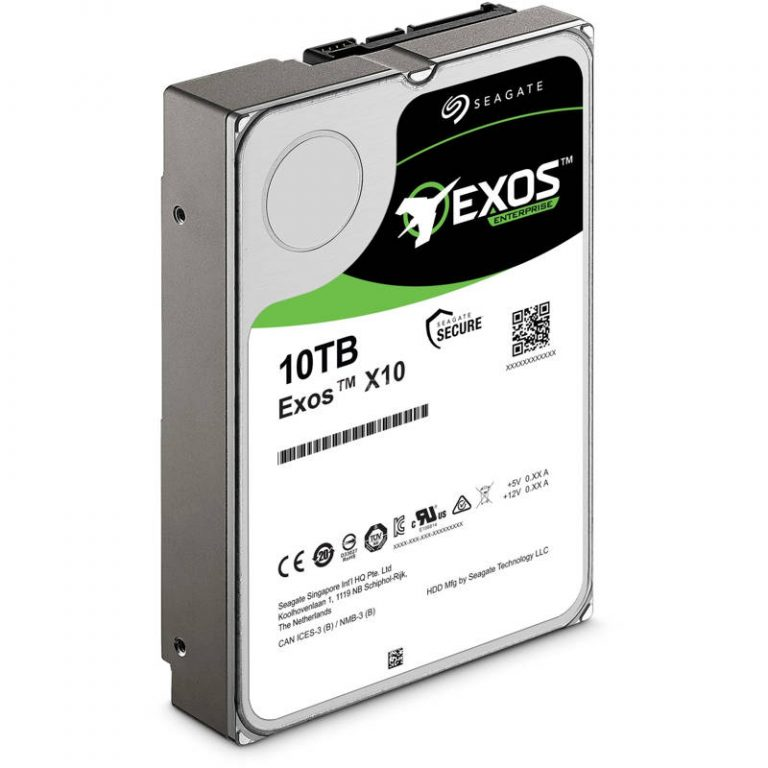
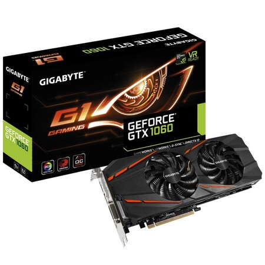

Componentes internos de un PC
Los componentes internos son los que componen el hardware de nuestro equipo, y serán los encargados de manejar la información que nosotros introducimos o la que descargamos desde Internet.
Serán los que nos harán posible almacenar datos, jugar a juegos o mostrar por una pantalla los trabajos que realizamos.
Los componentes internos básicos serán:
- Placa Base
- CPU o Procesador
- Memoria Ram
- Disco Duro
- Tarjeta Gráfica
- Fuente de Alimentación
- Tarjeta de Red
Estos componentes van a generar calor, ya que funcionan mediante electricidad y a enormes frecuencias de procesamiento.
Entonces también consideramos componentes internos los siguientes:
- Disipadores
- Ventiladores
- Refrigeración
CPU - Microprocesador
El microprocesador es el cerebro del ordenador, el que se encarga de analizar absolutamente toda la información que pasa por él en forma de unos y ceros. El procesador decodifica y ejecuta las instrucciones de los programas cargados en la memoria principal del ordenador y coordina y controla todos o casi todos los componentes, así como los periféricos conectados. La velocidad con la que procesa estas instrucciones una CPU se mide en ciclos por segundo o hertzios (Hz).
Calidad de un CPU
Pasa saber si un procesador es potente o no, lo que tenemos que medir siempre es la frecuencia a la que trabaja, es decir, la cantidad de operaciones que es capaz de realizar por unidad de tiempo. Pero además de esta medida, hay otras que también son fundamentales para conocer su rendimiento y poder compáralo con otros procesadores:
- Frecuencia
- Ancho de bus
- Memoria Caché
- Núcleos
Arquitectura
La arquitectura de un microprocesador la forma el conjunto de instrucciones con las que está fabricado un procesador, actualmente predomina la x86. Habrás visto este número en la mayoría de CPU. Además de esto, la arquitectura nos indica el proceso de fabricación y tamaño utilizados para implementar los transistores.
Placa Base
Una placa base es básicamente una placa PCB constituida por un circuito integrado que interconecta una serie de chips, condensadores y conectores repartidos por toda ella, que en su conjunto forma el ordenador.
En esta placa conectaremos el procesador, la memoria RAM la tarjeta gráfica y prácticamente todos los elementos internos de nuestro ordenador.
Explicar una placa base en detalle es tremendamente complejo debido a la enorme cantidad de elementos importantes que tiene.
- XL-ATXy E-ATX:
- ATX:
- Micro-ATX:
- ITX:
Componentes
Las placas base actuales cuentan con muchísimas funcionalidades y además tienen multitud de componentes instalados que antiguamente solamente se podían encontrar en tarjetas de expansión.
- Bios
- Tarjeta de Sonido
- Tarjeta de Red
- Ranuras de Expansión

Memoria Ram
La memoria RAM (Random Access Memory) es un componente interno que se instala en la placa base y sirve para cargar y almacenar todas las instrucciones que se ejecutan en el procesador. Estas instrucciones son enviadas desde todos los dispositivos conectados a la placa base y a los puertos de nuestro equipo.
La memoria RAM tiene comunicación directa con el procesador para que la trasferencia de datos sea más rápida.
Se llama de acceso aleatorio porque la información se almacena de forma dinámica en las celdas que hay libres, sin orden aparente. Además, esta información no se queda grabada de forma permanente como en un disco duro, sino que se pierde cada vez que apagamos nuestro ordenador.
Tipos
ordenador de menos de 4 años -> DDR en su versión 4
ordenador actual -> DDR SDRAM (Double Data Rate Synchronous Dynamic-Access Memory)
Almacenamiento
capacidades de medida: Gigabytes o GB.
Los módulos de memoria actuales tienen una capacidad que va desde los 2 GB hasta los 16 GB.
algunos de 32 GB
Ranuras
Disco Duro
Pasamos ahora a ver los discos duros y la utilidad que tienen para nuestro equipo.
Como los anteriores, es un dispositivo que se instala de forma interna en nuestro equipo, aunque también existen de forma externa, y conectados mediante USB en la mayoría de casos.
Existen muchos tipos de discos duros, así como tecnologías de construcción, ha habrás oído hablar de disco duros HDD o discos duros SDD
Disco duro HDD
Consiste en un dispositivo metálico rectangular y de considerable peso que en su interior almacena una serie de discos o platos pegados sobre un eje común.
Este eje tiene un motor para hacerlos girar a grandes velocidades y será posible leer y escribir información gracias a un cabezal magnético situado en la cara de cada plato.

Lo importante de los discos duros es su capacidad de almacenamiento y la velocidad que tienen. La capacidad se mide en GB, mientras más tenga, más datos podremos almacenar.
-
Disco de 3,5 pulgadas
-
Disco de 2,5 Pulgadas
Disco duro SSD
unidades de almacenamiento en estado sólido, que son dispositivos capaces de almacenar de forma permanente información en chips de memoria flash, como los que tienen las memorias RAM.
En este caso los datos se almacenan en celdas de memoria formadas por puertas lógicas NAND básicamente, ya que éstas pueden almacenar un estado de tensión sin necesidad de un suministro de corriente.
Existen tres tipos de tecnologías de fabricación, SLC, MLC y TLC.
Tarjeta Gráfica

Una tarjeta gráfica básicamente es un dispositivo que va conectado a una ranura de expansión PCI-Express 3.0 x16 que cuenta con un procesador gráfico o GPU que se encarga de realizar todo el complejo procesamiento de gráficos de nuestro ordenador.
Decimos que no son estrictamente necesarias porque la mayoría de procesadores actuales cuentan con un circuito en su interior que es capaz de encargarse de hacer el procesamiento de estos datos gráficos, y es por esto que las placas bases tienen puertos HDMI o DisplayPort para conectar nuestra pantalla a ellas.
A estos procesadores de se denominan APU (Unidad de procesamiento Acelerado)
Tecnologias y Fabricantes
NVIDIA

Nvidia tiene las mejores tarjetas gráficas a día de hoy, ciertamente no son las más baratas, pero sí tiene los modelos de mayor rendimiento en el mercado.
- Tecnología Turing
- Tecnología Pascal
AMD
Sus modelos TOP no tienen la apabullante potencia de las Nvidia tope gama, pero también tiene modelos muy interesantes para la mayoría de jugadores.
- Radeon VII
- Radeon Vega
- Polaris RX
Fuente de alimentación
Como su propio nombre indica, es un dispositivo que proporciona corriente eléctrica a los elementos electrónicos que constituyen nuestro ordenador, y que son básicamente los que ya hemos visto en anteriores apartados.
Estas fuentes se encargan de transformar la corriente alterna de nuestra casa de 240 Voltios (V) en corriente continua y distribuirla entre todos los componentes que la necesiten mediante conectores y cables.
Normalmente las tensiones que se manejan son de 12 V y 5 V.
Tipos
- ATX
- SFX
- Formato de servidor
- Fuente de alimentación externa
Conectores
- ATX de 24 pines
- EPS de 12 V
- Conector PCI-E
- Alimentación SATA
- Conector Molex

Tarjeta de Red
Una tarjeta de red es una tarjeta de expansión, o interna de la placa base que nos va a permitir conectarnos a nuestro router para obtener conexión a Internet o a una red LAN.
Existen dos tipos de tarjetas de red:
Disipadores y Refrigeración
La misión de un disipador es bien sencilla, recoger el calor que genera un elemento electrónico como un procesador debido a su alta frecuencia y transmitirlo al ambiente.
Para hacer esto un disipador consta de:
- bloque metálico
- bloque de aluminio
- tubos de calor o heatpipes
- Uno o varios ventiladores
La refrigeración líquida consiste en separar los elementos de disipación en dos grandes bloques que componen un circuito de agua.
-
El primero de ellos se situará en el propio procesador, será un bloque de cobre repleto de pequeños canales por los que circulará un líquido accionado por una bomba.
-
El segundo será un intercambiador aleteado con ventiladores que se encargará de recoger el calor del agua que a él llega y trasmitirla al aire.
-
Para ello se deberá utilizar una serie de tubos que compongan un circuito en el que el agua circule y nunca se evapore.
Chasis
El chasis o caja, es un recinto construido de metal, plástico y cristal que se encargará de almacenar todo este ecosistema de componente electrónicos y así tenerlos ordenados, correctamente conectados y refrigerados.
-
Chasis ATX o Semitorre: consiste en una caja de aproximadamente 450 mm de largo, otros 450 mm de alto y 210 mm de ancho. Se denomina ATX porque podremos instalar en ella placas base en formato ATX y también más pequeñas.
Son las más utilizadas.
-
Chasis E-ATX o de torre completa: Son las más grandes y son capaces de albergar en su interior prácticamente cualquier componente y placa base, incluso las más grandes.
-
Caja Micro-ATX, Mini-ITX o mini torre: son de un tamaño menor, y están diseñadas para poder instalar las placas base de estos tipos de formatos.
-
Caja SFF: estas son las típicas que encontramos en los ordenadores de las universidades, son torres muy delgadas y que se colocan en armarios o tendidas en una mesa.